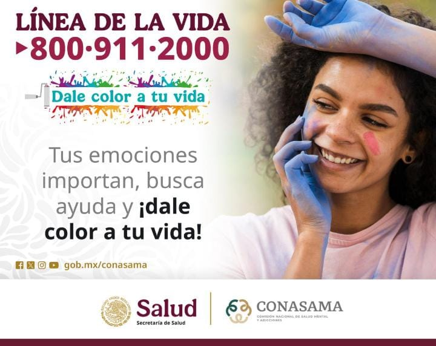
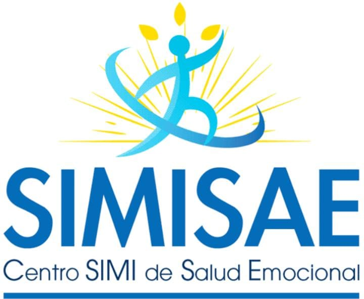
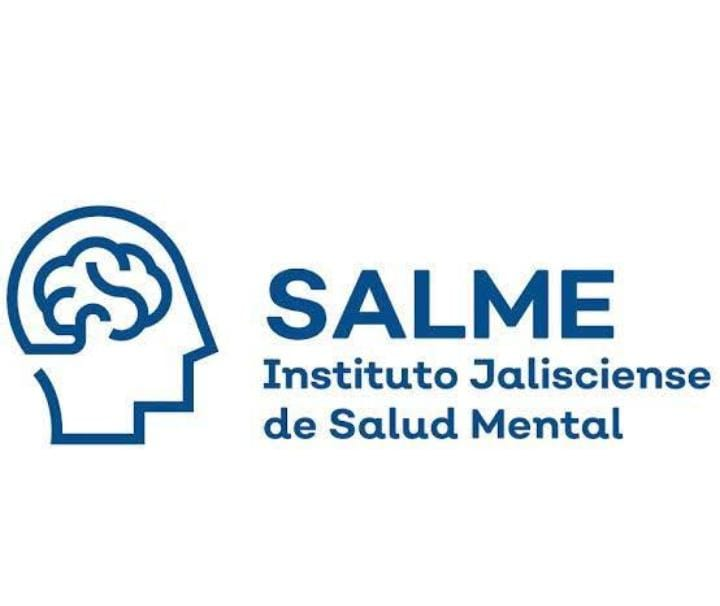
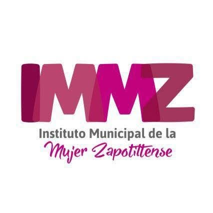

Nadie tiene que enfrentar solo una situación difícil 💗

Servicio telefónico gratuito de orientación en salud mental y adicciones, disponible las 24 horas, los 365 días del año. Brinda información, apoyo emocional, intervención en crisis y canalización a servicios especializados. Operado por la Comisión Nacional de Salud Mental y Adicciones.
📞 Teléfono: 800-911-2000
Visitar sitio 🔗
Servicio de apoyo psicológico gratuito del Dr. Simi, disponible por teléfono, chat y correo electrónico las 24 horas del día. Utiliza un modelo de terapia breve.
📞 Teléfono: 800-911-3232
Visitar sitio 🔗
Institución de investigación, capacitación y servicios en salud mental y adicciones del Estado de Jalisco. Ofrece atención presencial y línea de intervención en crisis.
📞 Teléfono: 33 3833 3838
Visitar sitio 🔗
Es una institución que brinda atención y orientación a las mujeres de Zapotiltic, Jalisco. Su objetivo es promover la igualdad de género, proteger los derechos de las mujeres y ofrecer apoyo ante situaciones de violencia. Cuenta con servicios de asesoría jurídica, atención psicológica y actividades informativas, así como cursos y talleres para fortalecer el bienestar y desarrollo de las mujeres.
📞 Teléfono:341 414 0561